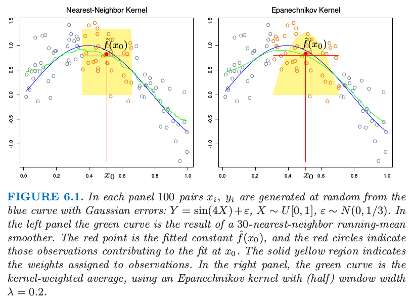
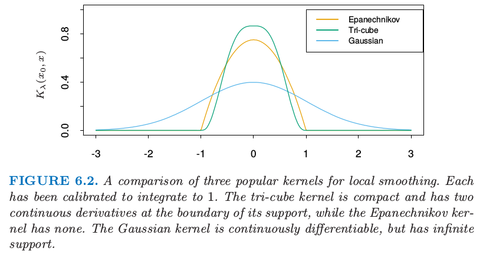
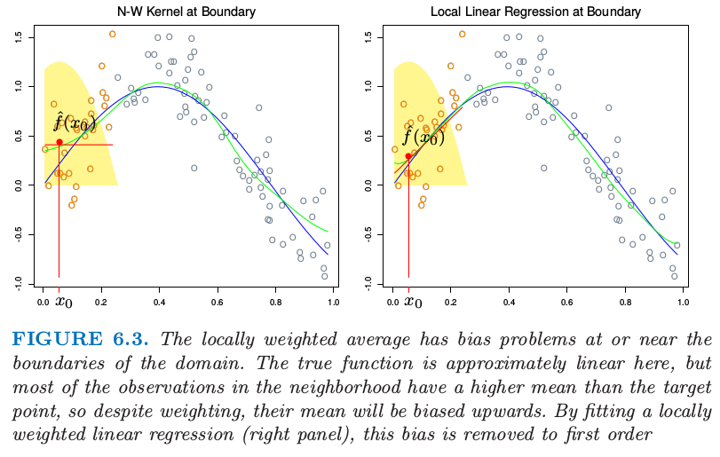
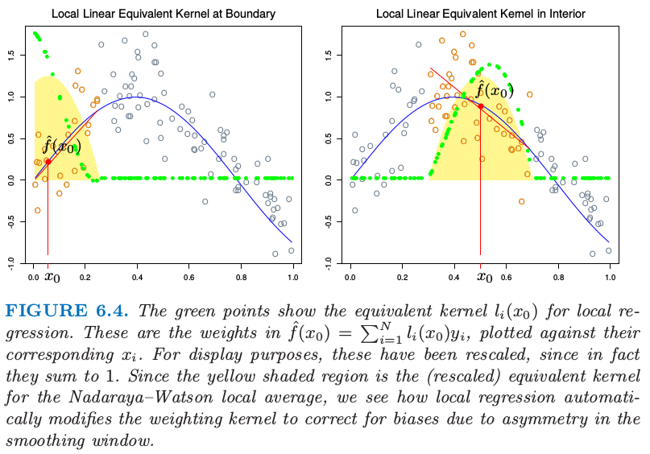
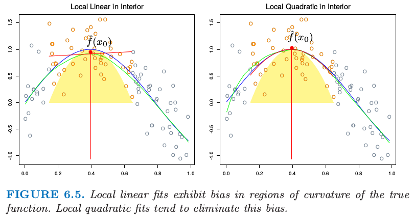
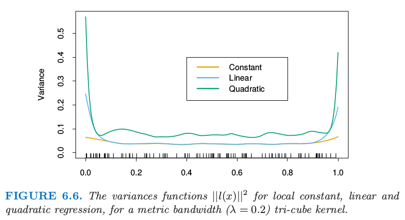

6.1 一维核平滑器
Contents
6.1 一维核平滑器¶
第二章中，我们将 \(k\)-最近邻平均（ 式 6.1 ）作为回归函数 \(\mathbb{E}(Y\mid X=x)\) 的估计。
这里 \(N_k(x)\) 为在平方距离下，离 \(x\) 最近的 \(k\) 个点的集合，并且 \(\mathrm{Ave}\) 表示求平均（均值）。这个想法放宽了条件期望的定义，正如图 6.1 的左图所示，计算目标点邻域的均值。这种情形下我们采用 \(30\) -最近邻法，即在 \(x_0\) 处的拟合值为距离 \(x_0\) 最近的 \(30\) 个点的平均值。在不同 \(x_0\) 处应用该定义可以得到绿色曲线。可以看到，绿色曲线并不平滑，因为 \(\hat f(x)\) 在 \(x\) 处无法保证不连续。当我们将 \(x_0\) 从左移到右的过程中，\(k\) 最近邻法在出现 \(x_0\) 右侧的最近点 \(x_i\) 变得比其左侧邻域最远点 \(x_i'\) 更近的情况之前，会一直保持响应值不变；在出现这种情况后，将邻域集合中的 \(x_i\) 换成 \(x_i'\) ，按照式（ 6.1 ）中的均值定义，响应值也会以离散方式跳变，得到不连续的 \(\hat f(x)\)。

图6.1 每张图中，在蓝色曲线基础上通过增加高斯误差，随机产生 \(100\) 个数据对 \(x_i,y_i\)：\(Y=\sin(4X)+\varepsilon,X\sim U[0,1],\varepsilon\sim N(0,1/3)\)。左图绿色曲线是 \(30\) -最近邻滑动均值平滑器的结果。红色点为在 \(x_0\) 点拟合的 \(\hat f(x_0)\) 值，红色圆圈表明对 \(x_0\) 处的拟合有贡献的观测数据点。实心黄色区域为赋予观测数据点的权重。右图中，绿色曲线是加权核平均，采用了（半）窗宽度为 \(\lambda=0.2\) 的
Epanechnikov 核。
不连续是不好看并且不必要的。与其对邻域中的点赋予相等权重，不如考虑分配不同的权重，以使其随着与目标点的距离而平滑降低。图 6.1 右图显示了一个例子，使用了被称作 Nadaraya–Watson 的核权重均值：
其中 Epanechnikov 平方核为：
现在拟合结果变成连续函数了，并且图 6.1 中的右图非常平滑。此时当我们将目标点从左移到右的过程中，新进入邻域中的点初始化权重从 \(0\) 开始，然后其贡献缓慢地增长（见练习 6.1）。
在右图中，我们采用的核窗口大小为 \(\lambda=0.2\)，当移动目标点 \(x_0\) 时窗口大小不变，而 \(30\) -最近邻法的平滑窗口大小则根据 \(x_i\) 的局部密度动态变化。当然，我们可以使用这种自适应的核邻域，但是需要更泛化的表示。令 \(h_\lambda(x_0)\) 为宽度函数（ 由 \(\lambda\) 索引 ），它确定着 \(x_0\) 处的核邻域宽度。于是更一般地我们有：
可以看出，在式（ 6.3 ） 中，\(h_\lambda(x_0)=\lambda\) 是一个常数。对于 \(k\) 最近邻邻域，用邻域大小 \(k\) 代替 \(\lambda\)，并且有 \(h_k(x_0)=\vert x_0-x_{[k]}\vert\)，其中 \(x_{[k]}\) 是离 \(x_0\) 的第 \(k\) 个最近的点。
在实际中有许多细节需要注意：
需要确定平滑参数 \(\lambda\)，它决定了局部邻域的宽度。大的 \(\lambda\) 表明低方差（在更多的观测上平均）但高偏差（ 实质上假设在窗口中真实函数为常数 ）。
度量窗口宽度（ \(h_\lambda(x)\) ）趋向于保持估计的偏差为常数，但是方差与局部密度成反比。最近邻的窗口宽度表现出相反地行为；方差为常数并且绝对偏差随局部密度反比例变化。
当在 \(x_i\) 处出现 结 (tie) 时，最近邻法会出现问题。大部分平滑技巧，可以简单地通过在打结的 \(X\) 值处对 \(y_i\) 平均来减少数据集，并且对 \(x_i\) 处新的唯一观测赋予额外的权重 \(w_i\)（这个乘以核权重）。
note “weiya 注：tied data” 简单理解为重复数据，参考 ranking - What is tied data in the context of a rank correlation coefficient? - Cross Validated。
有个更一般的问题需要处理：观测的权重 \(w_i\)。实际操作中我们在计算加权平均时简单地将它们乘上核权重。在最近邻中，保持邻域的总权重 \(k\)（与 \(\sum w_i\) 相对）是自然的。在 超出 (overflow) 的情形中（邻域中最后一个需要的观测的权重 \(w_j\) 会导致权重中和超出 \(k\)）,于是可以采用其中的一部分（也就相当于去掉超出的量）。
产生边界问题。度量邻域趋向于在边界处包含更少的点，而最近邻趋向于变得更宽。
Epanechnikov 核有紧的支撑集（当与最近邻窗口宽度同时使用会需要）。另外一个受欢迎的紧凑核 (compact kernel) 基于三次立方函数
这在上面是平的（与最近邻盒子类似）并且在支撑集的边界是可导的。高斯密度函数 \(D(t)=\phi(t)\) 是受欢迎的非紧凑核，其中标准差扮演了窗口大小的角色。图 6.2 比较了这三个。
note “weiya 注：” 紧凑核 (compact kernel) 应该是指支撑集为紧集的核。紧集或者紧致性的直观解释可以参见 如何直观地解释「紧致性」？ - 包遵信的回答 - 知乎.

图 6.2 局部平滑的三个流行的核的比较。每个都已经经过校准使得积分为 \(1\)。三次立方核是紧的并且在支撑集的边界有二阶连续微分，而 Epanechnikov 没有。高斯核是连续可微的，但是有无限的支撑集。
6.1.1 局部线性回归¶
我们已经从原始的滑动平均进步到通过使用核权重实现的平滑变化局部加权平均。然而，平滑核拟合仍然有问题，正如图 6.3（左）显示的那样。局部加权平均会在定义域边界处有严重的偏差，因为这个区域内核的不对称性。通过拟合直线而不是局部的常值，我们可以将偏差降至一阶；见图 6.3（右）。实际上，如果 \(X\) 值不是相等的间隔（基于同样的原因，但是通常没有那么严重），偏差也可以表现在定义域的中间。再一次局部加权线性回归会纠正为一阶误差。

图 6.3. 局部加权平均在定义域边界处或附近有着偏差问题。真实的函数在这里近似线性，但是邻域中大部分观测比目标点有更高的均值，所以尽管进行了加权，但是它们的均值将会向上偏。通过拟合局部的加权线性回归（右），这个偏差会降到一阶。
note “weiya 注：不对称性” 注意图中黄色阴影区域只有图 6.1 中右图的一半，对应的高度表示赋予给观测的权重。
局部加权回归解决了在每个目标点处独立的加权最小二乘问题：
于是估计为 \(\hat f(x_0)=\hat\alpha(x_0)+\hat\beta(x_0)x_0\)。注意到尽管我们对区域内的数据拟合整个线性模型，但是我们只用它来确定单点 \(x_0\) 处的函数值。
定义向量值函数为 \(b(x)^T=(1,x)\)。令 \(\mathbf B\) 为 \(N\times 2\) 的回归矩阵，第 \(i\) 行为 \(b(x_i)^T\)，并且 \(\mathbf W(x_0)\) 为 \(N\times N\) 的对角矩阵，其中第 \(i\) 个对角元为 \(K_\lambda(x_0,x_i)\)。于是
注解： 广义最小二乘估计 (GLSE) 线性模型为
$\beta$ 估计为
当
有**加权最小二乘估计 (WLSE)**
等式（ 6.8 ） 给出了局部线性回归估计的显式表达，式（ 6.9 ） 强调了估计关于 \(y_i\) 为线性的（\(l_i(x_0)\) 不涉及 \(\mathbf y\)）。这些权重 \(l_i(x_0)\) 结合了核 \(K_\lambda(x_0,\cdot)\) 和最小二乘估计，并且有时称作 等价核 (equivalent kernel)。图 6.4 说明了局部线性回归在等价核上的影响。从历史上看，Nadaraya–Watson 和其他局部平均核方法中的偏差是通过修改核本身进行纠正。这些修改基于理论渐近的均方误差，不仅很复杂，而且只对有限样本进行近似。局部线性回归自动地修改核将偏差矫正到恰好为一阶，这是被称为 自动核作品 (automatic kernel carpentry) 的现象。
info “weiya 注：automatic kernel carpentry” 更多细节可以参考 T. Hastie and C. Loader (1993). Local Regression: Automatic Kernel Carpentry
考虑下面 \(\mathbb{E} \hat f(x_0)\) 的展开，利用局部回归的线性和真实函数 \(f\) 在 \(x_0\) 处的展开，
其中余项 \(R\) 涉及 \(f\) 的三阶微分和更高阶的微分，并且在合适的平滑性假设下一般是很小的。可以证明（练习 6.2）对于局部线性回归，\(\sum_{i=1}^Nl_i(x_0)=1\) 并且 \(\sum_{i=1}^N(x_i-x_0)l_i(x_0)=0\)。因此中间项为 \(f(x_0)\)，并且因为偏差为 \(\mathbb{E} \hat f(x_0)-f(x_0)\)，我们看到它仅仅取决于 \(f\) 的平方项或更高阶的项。
info “weiya 注：” 已解决，详见 Issue 148: Ex. 6.2。

图 6.4. 绿色点显示了局部回归的等价核。这是 \(\hat f(x_0)=\sum_{i=1}^Nl_i(x_0)y_i\) 中的系数，是关于对应 \(x_i\) 的图像。为了展示的目的，这些已经进行了缩放，因为实际上它们相加等于 1。因为黄色阴影区域是 Nadaraya–Watson 局部平均的（缩放的）等价核，所以我们看到局部回归是怎样自动修改权重核来纠正由于平滑窗口的不对称窗口的偏差。
6.1.2 局部多项式回归¶
为什么止步于局部线性拟合处？其实我们可以拟合任意阶 \(d\) 的局部多项式拟合，
解为 \(\hat f(x_0)=\hat \alpha(x_0)+\sum_{j=1}^d\hat\beta_j(x_0)x_0^j\)。实际上，类似 式（ 6.10 ） 的表达式将告诉我们偏差仅仅有 \(d+1\) 阶和更高阶的组分（练习 6.2）。图 6.5 说明了局部二次回归。局部线性拟合趋向于在真实函数的区域中有偏差，这个现象被称作 截断山坡 (trimming the hills) 和 填充山谷 (filling the valleys)。局部二次回归一般可以纠正这个偏差。

图 6.5. 局部线性拟合在真实函数曲线区域中的偏差。局部二次拟合趋向于消除这个偏差。
当然为了减小这个偏差需要付出代价，也就是增加方差。图 6.5 的右图更摇摆，特别在尾巴处。假设模型 \(y_i=f(x_i)+\varepsilon_i\)，并且 \(\varepsilon_i\) 独立，并且是均值为 \(0\) 方差为 \(\sigma^2\) 的同分布，\(\mathrm{Var}(\hat f(x_0))=\sigma^2\Vert l(x_0)\Vert^2\)，其中 \(l(x_0)\) 是在 \(x_0\) 处等价核权重的向量。可以证明（练习 6.3）\(\Vert l(x_0)\Vert\) 随着 \(d\) 增加而增加，所以在选择多项式次数时存在偏差和方差之间的权衡。
info “weiya 注：Ex. 6.3” 证明了 \(W=I\) 的情形，但是对于一般的权重系数矩阵，卡住了。欢迎交流讨论，Issue 149: Ex. 6.3.
图 6.6 说明了次数为 0,1 和 2 的局部多项式的方差曲线。总结一下这个问题上一些正确的做法：
局部线性拟合在边界处以适合的方差代价对偏差有显著的帮助。但局部二次拟合在边界处对偏差的贡献很少，而且大幅增加了方差。
局部二次拟合在定义域内部对于降低由于曲率造成的偏差趋向于是最有帮助的。
渐近分析表明奇数阶的局部多项式表现得比偶数阶要好。大部分是因为渐近情况下，MSE 由边界影响主导。

图 6.6. 对于度量窗口宽度（\(\lambda=0.2\)）的三次立方核方差函数 \(\Vert l(x)\Vert^2\)，局部常值，线性和二次回归的方差函数 \(\Vert l(x)\Vert^2\)。
尽管这对修补可能会有帮助，在边界处采用局部线性拟合然后在内部采用局部二次拟合，但是我们不推荐这种策略。通常具体的应用规定了拟合的阶数。举个例子，如果我们关心 向外推断 (extrapolation)，则我们对边界更感兴趣，此时局部线性拟合或许更可靠。